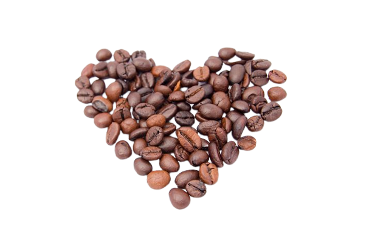
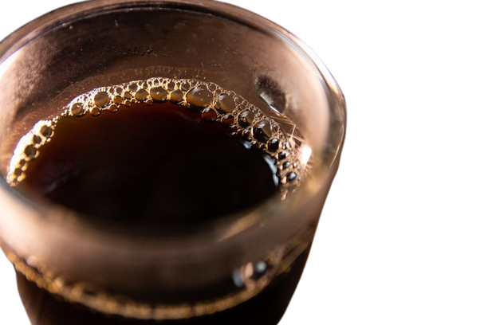
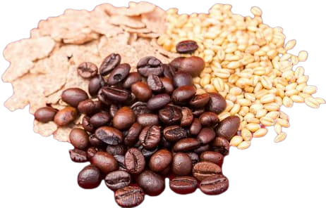

Makes your heart beats fast and makes you excited about new events
and things coming, be prepared to have your heart on fire!

The best thing to begin your morning. With it, you can be fully
awake and focus for the work you're supposed to do. Get some
motivation! But do we really need it when it comes to discipline
with a full love of coffee?

One of the best grains that can help you get rid of headaches with
its own formula. More blood flow in the brain, less headaches! But
do not exceed the minimal dose: 400mg per day. A good 120mg is
sufficient. Kopf-fee? Headache free!
Adventure in life is good. Consistency in coffee even better.
- Justina Headley
What are you waiting! Coffee tastes better when hot!
Sign up for our product by clicking that button right over there!